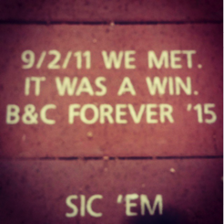

Brittney & Christopher met Freshman year at Baylor University. They had two classes together and experienced an immediate chemistry. The couple attended the first Baylor football game of the year, where they rode a mechanical bull, shared a snow cone and rushed the field after the Bears narrowly defeated their devilish rivals--the TCU Hornfrogs.
There is a brick in the new stadium that reads: "9/2/11 We Met. It was a win. B & C 4ever"
| Caption Area  Caption Area |
Wishing to spend more time with Brittney, Christopher joined the Baylor Crew team, although it required arduous 4:30 a.m. workouts. He asked her to be his girlfriend by creating a fairy-tale book which ended with the statement "...and this is only the beginning of our story." The couple maintained their close friendship even while spending months apart as Britt studied abroad in Europe. Christopher popped the question on Brittney's 22nd birthday in the pouring rain in the spot they first spoke on Baylor Campus, after reciting the 22 reasons he loved her. She did not say yes. She actually started crying and later mustered the words "of course."
Thursday December 31, 2015
5:45 p.m. - 8:45 p.m.
Swedenborgian Church
2107 Lyon Street
Details:
Food: Dinner & Dessert will be served.
Attire: Festive Formal
Colors: Charcoal, Mercury & Sterling with Silver Sequin Accents